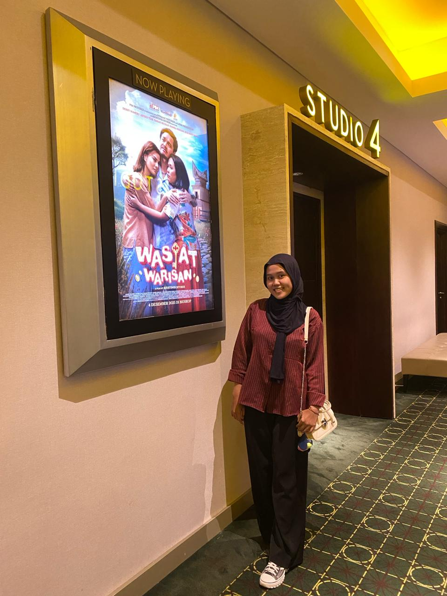

Untuk Mentari Paling Terang di Hidup Mas
Gulir perlahan ke bawah ya, Bunga Matahariku...
Mas masih ingat betul hari itu, 5 September 2024. Di keramaian penutupan acara KKN, mas memberanikan diri menyapamu lewat sepotong roti.
Siapa sangka, dari hal sesederhana itu, Tuhan sedang melebarkan jalan paling indah dalam hidup mas: yaitu kamu, seperti benih matahari yang mulai tumbuh mekar.

Oktober 2025, akhirnya mas bisa menatap mata itu secara langsung di Pekanbaru. Jujur... kehangatan senyummu membuat mas terpana, persis seperti indahnya bunga matahari menghadap surya.
Seminggu kita menjelajah tawa, kulineran, beli bunga segar, dan merangkai kenangan di photobox. Rasanya, dunia hanya milik kita berdua.
Lalu di bulan April 2026 kemarin, giliran kamu yang meluangkan waktu, menempuh jarak untuk menemui mas di Jambi.
Berkeliling kota berdua, menertawakan hal-hal kecil di bawah langit Jambi... Terima kasih ya, Sayang. Terima kasih sudah mau terus tumbuh dan bersinar mekar sama-sama untuk kita.
"Selamat bertambah usia perempuan kuat, cantik, baik, cerdas, dan manis. Perempuan yang sedih dan senang larinya ke sajak. Banyak hal yang membuatmu runtuh, tapi juga banyak hal yang sudah membuatmu tumbuh."
Semoga keberkahan selalu menyertai di setiap langkahmu, dan tetaplah bahagia, mekar dengan indah di setiap musim hidupmu.
Tetaplah bersinar mekar, Natasya.
— Mas.